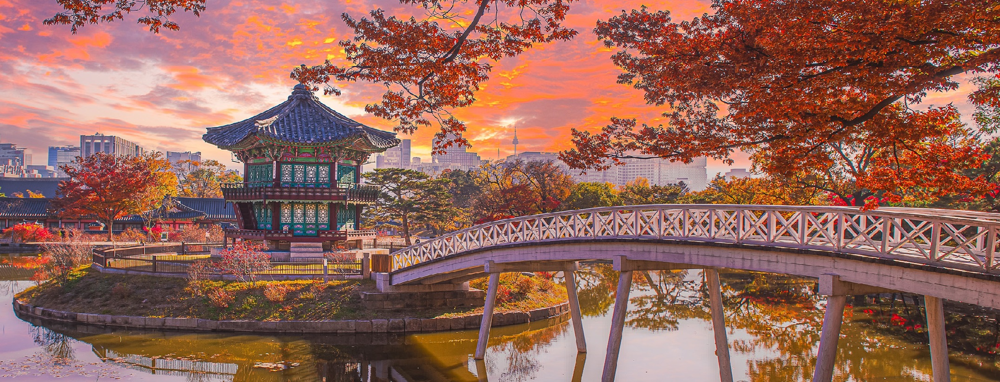
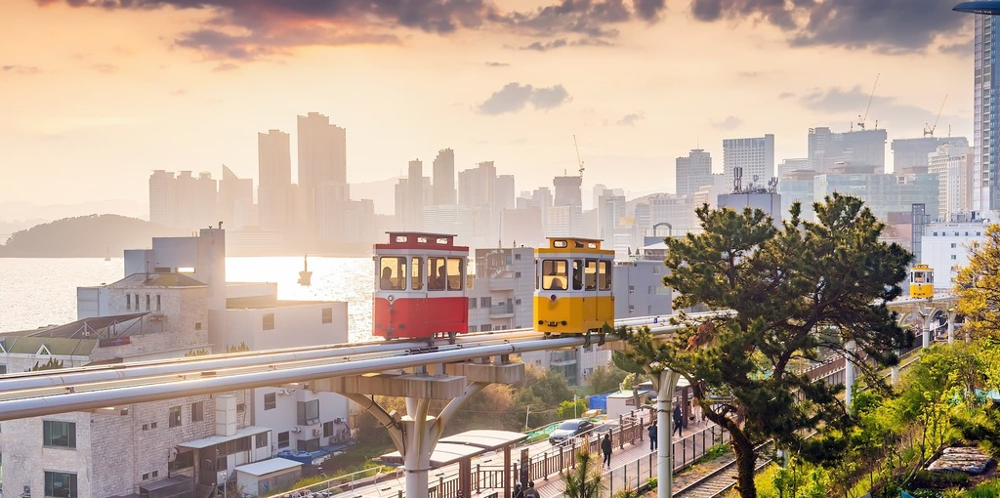

Notre application
Go Busan App
Cliquez sur le logo pour en savoir plus

La Corée du Sud est une péninsule d'Asie de l'Est de 51 millions d'habitants, dont la capitale Séoul est l'une des mégapoles les plus dynamiques au monde, mêlant palais de la dynastie Joseon, temples bouddhistes et gratte-ciels vertigineux.
Patrie de la K-pop, du cinéma primé à Cannes et d'une gastronomie mondialement reconnue — kimchi, bibimbap, barbecue coréen —, le pays attire chaque année des millions de visiteurs en quête d'une expérience culturelle unique et contrastée.
Des montagnes du parc national de Seoraksan aux ruelles néon de Hongdae, en passant par les villages hanok préservés de Jeonju, la Corée offre une palette de paysages et d'émotions qu'aucun autre pays d'Asie ne réplique.

Deuxième ville de Corée avec 3,4 millions d'habitants, Busan est une ville portuaire au caractère brut et attachant, célèbre pour ses plages urbaines de Haeundae et Gwangalli, son marché aux poissons de Jagalchi — le plus grand du pays — et ses quartiers colorés accrochés à flanc de colline.
Ville hôte du Festival international du film de Busan (BIFF), elle est aussi le point de départ idéal pour explorer les temples côtiers comme Haedong Yonggungsa, dressé spectaculairement sur les rochers face à la mer de Corée.
Entre cuisine de rue épicée, bains publics traditionnels (jjimjilbang) et scène culturelle en plein essor, Busan incarne une modernité authentique, loin des circuits touristiques convenus de la capitale.
Cliquez sur le logo pour en savoir plus